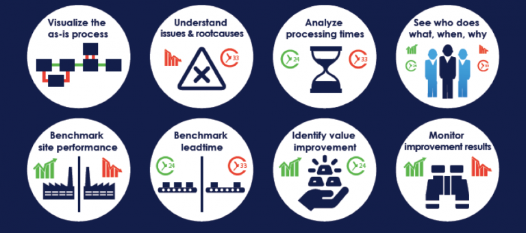

Op deze pagina worden mijn resultaten, bevindingen en competenties die betrekking hebben tot het vak Smart Start gepresenteerd. Smart Start is een vak waarin een introductie wordt gegeven op de smart industry door dit onderwerp van een aantal verschillende kanten te bekijken met hierin als leidende draad de Smart Research. Het doel van de lessen is om de studenten te leren de mogelijkheden van smart industry te herkennen en door middel van een realistisch plan toe te passen. De lessen van Smart Start zijn gedurende de eerste zes weken wekelijks gegeven, de resultaten van de werkcolleges en de weekopdrachten worden in onderstaande paragrafen per week weergegeven.
In deze eerste les van smart start wordt een introductie gegeven op de smart research. Deze les wordt gehouden aan de hand van de scrum methode wat inhoudt dat er korte "sprints worden gehouden die daarna klassikaal worden besproken. Deze manier van werken is voor mij nieuw en was even wennen, het is wel een manier van werken die er voor zorgt dat je genoeg tijd hebt om je eigen opdrachten af te hebben en deze hierna direct te kunnen bespreken.
In de eerste sprint wordt in tweetallen een overzicht gemaakt van competenties en een aantal uitgangspunten die belangrijk zijn voor de smart industry. Verder zijn er een aantal onderzoeksmethoden of design methoden verzameld waar Timo en ik reeds bekend mee waren. In dit bestand is ons resultaat te vinden op de 1e dia.
De genoemde competenties zijn als volgt:
Onderzoekend vermogen, hiermee wordt bedoeld dat iemand het inzicht moet hebben om in een onderzoek te zien wat wel of niet waardevolle informatie is en deze informatie op een juiste manier toe kan passen om tot het gewenste resultaat te komen.
Probleemherkenning en diagnose, voor een geslaagd onderzoek moet eerst zeer concreet zichtbaar zijn wat het probleem is zodat er gericht kan worden gewerkt naar een oplossing. Het probleem lijkt soms erg oppervlakkig maar kan bij nader bestuderen op een andere plek liggen dan eerder werd verwacht. Hierom is het essentieel om door te hebben wat het probleem is en waarom er hier een oplossing voor nodig is.
Schakelen en verbinden, onderzoek gaat zelden individueel. Dus ook bij onderzoek is het cruciaal dat je goed kan communiceren en samenwerken. Hierbij is het belangrijk om te weten wie je gesprekspartners zijn zodat de informatie die voor het publiek belangrijk is gepresenteerd kan worden zonder hier te veel (voor het publiek) minder interessante informatie bij te voegen.
De lijst van uitgangspunten in de smart industry zijn als volgt:
Het proces wordt efficiënter en effectiever. Dit gaat over processen in het algemeen, of het nu gaat om een bedrijfskundig of een werktuigbouwkundig proces, er is altijd ruimte voor verbetering. Het doel van de smart industry is het proces verbeteren door gebruik te maken van technologie en de slimme toepassingen hiervan.
Flexibiliteit. Met flexibiliteit wordt hier bedoeld dat er gestreefd wordt naar een flexibel proces, ofwel een proces wat nog aangepast kan worden om nog efficiënter te worden.
Objectiviteit. Een onderzoek moet natuurlijk objectief worden uitgevoerd. Alleen een objectief onderzoek geeft de resultaten die een organisatie verder gaan helpen in het verbeteren van de processen.
In de tweede week wordt de theorie van les 1 in praktijk toegepast. De opdracht in deze les is de smart opties voor 1 van de opdrachtgevers van het project onderzoeken en uitwerken. Het bedrijf wat mijn groep heeft bekeken is Flynth adviseurs & accountants. Omdat ik weinig bedrijfskundige ervaring heb ben ik het eerste deel van de les bezig geweest met een literatuur onderzoek naar de accountancy in het algemeen. Hierna is op de site van flynth gekeken naar velden waarin ze werkzaam zijn en mogelijkheden om de smart industry toe te passen. Omdat er op de site geen concrete processen zijn weergegeven ligt de focus tijdens deze opdracht op het toepassen van RPA. Door middel van RPA kunnen repetitieve processen door een software robot worden overgenomen wat, wanneer juist gebruikt, een enorme tijdswinst als gevolg kan hebben. Binnen een accountancybureau wordt er veel data verwerkt, dit zijn over het algemeen repetitieve processen waar eventueel RPA toepasbaar op is.
In week 3 zijn de groepen voor het project gevormd. Nu voor iedereen duidelijk is voor welk bedrijf, met welke groep en met wat voor opdracht je aan de slag gaat wordt daar in de les direct gebruik van gemaakt. Iedere groep neemt de tijd om meer informatie op te zoeken over het bedrijf en de theorie achter de opdracht. Ik heb samen met mijn projectgroep gezocht naar informatie over process mining en robotic process automation omdat onze opdracht bij flynth gebruik maakt van deze technieken. Nadat de informatie is verzameld wordt de link tussen RPA en process mining gemaakt en wordt gekeken naar processen die geschikt zijn voor het automatiseren door middel van RPA.
Robotic Process Automation:
Neemt routinewerkzaamheden en repetitief werk over
Kan 24/7 gebruikt worden voor werkzaamheden
Het zorgt voor een kortere doorlooptijd van het proces
De softwarerobot kan op bestaande systemen worden toegepast
RPA kan helpen met het opvangen van fluctuatie in werkdruk van medewerkers
Wanneer de softwarerobot juist is ingesteld kan deze foutloos werken
Process Mining
Analyseert alle handelingen van een proces die in een logboek zijn opgenomen
Het visualiseert processen waardoor complexe processen eenvoudig visueel worden geanalyseerd

Hoe is de link tussen RPA en process mining:
Begrip van processen Het process mining geeft inzicht in een proces op een manier die anders niet mogelijk is. Deze kennis van het proces is noodzakelijk om uit te zoeken op welke delen van je proces de RPA nuttig en toepasbaar is.
Opsporen geschikte processen Process mining maakt het eenvoudig om repetitieve handelingen op te sporen. Dit zijn vaak de processen waar een RPA goed op toepasbaar is en waar tijd op te winnen is.
Opsporen van verbeteringen Wanneer er een proces gekozen is om te verbeteren kan door middel van process mining de werkelijke staat van het proces gecontroleerd worden. Hierdoor zie je snel waar eventuele fouten of afwijkingen in het proces zitten.
Resultaten meten Met behulp van process mining wordt het eenvoudig om de resultaten van een geïmplementeerd RPA te meten en weer te geven.
Geschikte Processen voor RPA
De belangrijkste eis aan een proces wat je door middel van RPA wil verbeteren is dat het proces een specifieke volgorde van handelingen volgt en dat er geen menselijke logica voor nodig is. Het proces is bij voorkeur een proces waar veel tijd op te winnen is. Dit kunnen processen zijn die op de computer voor mensen lang duren maar voor een robot in enkele seconden/minuten uit te voeren zijn.
In deze les van smart start wordt gekeken naar het analyseren van processen aan de hand van Discrete Event Simulation. Discrete event simulation, of kort DES, is een methode om het gedrag of prestaties van een proces of systeem te simuleren. Door de verhoging van rekenkracht in computers wordt het mogelijk om steeds grotere en complexere simulaties te laten draaien. DES modelleert het systeem als een serie van gebeurtenissen die gedurende een periode gebeuren. Hierbij is het voor een goede simulatie noodzakelijk dat het systeem tijdens de simulatie niet verandert. In bijvoorbeeld een ziekenhuis wordt in de simulatie alle gebeurtenissen zoals een geboorte, een sterfgeval, een opname en een ontslag bijgehouden. Elke patiënt draagt informatie met zich mee, dit gaat van persoonlijke informatie zoals leeftijd en geslacht tot informatie over op welke afdeling deze patiënt zich begeeft. Deze informatie kan veranderen gedurende de simulatie, zo kan een patiënt overgeplaatst worden naar een andere afdeling of kan hij ontslagen worden uit het ziekenhuis. Ook worden de artsen en verpleegkundigen meegenomen in de simulatie. Er wordt rekening gehouden met een maximale bezetting van personeel die elk een maximum aantal uren kunnen werken per week. Zo wordt ook het aantal patiënten binnen de simulatie automatisch beperkt. DES maakt het ook mogelijk om complexe keuzes te maken binnen een simulatie. Zo worden er veel "wat als" scenario's gesimuleerd, dit geeft meer inzicht in de werking van het gesimuleerde systeem. Verder heb ik door middel van een JavaScript code een simulatie voor het bekende driedeuren probleem. Dit is een scenario waarin een deelnemer kan kiezen uit 3 deuren, achter 1 deur zit een prijs, achter de andere 2 deuren zit niks. Wanneer de deelnemer een deur heeft gekozen opent de presentator (die weet achter welke deur de prijs zit) een deur waar niks achter zit. Hier krijgt de deelnemer de keuze om van deur te wisselen of vast te houden aan de eerste gekozen deur. Hier lijkt het te gaan om een 50/50 keuze, echter is niets minder waar. Uit de simulatie waarbij een willekeurige deur wordt gekozen en de prijs achter een willekeurige deur staat blijkt dat de kans om te winnen ongeveer 67% als er gewisseld wordt tegen een 33% wanneer er niet gewisseld wordt.
Wanneer er op de knop gedrukt wordt worden er 1000 scenario's doorlopen waar gewisseld wordt, tegelijk worden er 1000 scenario's gelopen waar niet gewisseld wordt.
Wanneer er gewisseld wordt wordt er van de 1000 keer gewonnen
Wanneer er niet gewisseld wordt wordt er van de 1000 keer gewonnen
Wat hier opvalt is dat de waarden inderdaad dichtbij de 666 en 333 liggen wat de theorie achter het drie deuren probleem bevestigt.
In deze les wordt onderzoek gedaan naar de externe omgeving van Flynth adviseurs & accountants, dit wordt gebruikt als begin voor het projectplan wat tijdens het project uitgevoerd gaat worden. De externe omgeving is op te delen in een macro-omgeving en de directe omgeving.
Macro-omgeving. Dit omvat de omgevingsfactoren die grote invloed hebben op de resultaten van het bedrijf maar die de onderneming zelf niet kan beïnvloeden. Voor Flynth adviseurs & accountants zijn de resultaten vrijwel volledig afhankelijk van de betalingen van klanten. Wanneer klanten geen vermogen meer hebben om te betalen zal Flynth adviseurs & accountants geen betalingen meer binnen krijgen, hierdoor zijn omgevingsfactoren die grote invloed hebben op de klanten van Flynth ook direct omgevingsfactoren die invloed hebben op Flynth zelf. De COVID-19 crisis is hier een goed voorbeeld van. Doordat Flynth veel klanten heeft in sectoren die zwaar getroffen worden door de crisis is de kans groot dat er gedurende de crisis een moment komt waarop er minder facturen betaald gaan worden omdat klanten zich dit simpelweg niet meer kunnen veroorloven. Deze crisis is een factor waar Flynth zelf geen invloed op kan uitoefenen en valt dus onder de macro-omgeving.
Directe omgeving. De directe omgeving zijn externe partijen waar een onderneming direct zaken mee doet. In het geval van Flynth zijn dit enkel de klanten waar opdrachten voor lopen. Buiten deze partijen heeft Flynth geen klanten of partners die binnen de directe omgeving vallen.
Voor Flynth is het vooral erg interessant hoe de macro-omgeving zich gaat ontwikkelen, zoals eerder vermeldt is er een crisis gaande welke grote invloed zou kunnen hebben op de prestaties die Flynth als bedrijf levert. Tijdens het uitvoeren van het project is het zichtbaar geworden dat de gevolgen van de crisis voor Flynth op het moment nog minimaal zijn. Echter is het lastig te voorspellen hoe lang een crisis aanhoudt. Wanneer de crisis lang aanhoudt is de kans op faillissement van klanten groter, wat grotere gevolgen kan hebben voor Flynth adviseurs & accountants. Echter kan er met de tool die tijdens het project gebouwd is mogelijk om de gevolgen op de voet te volgen.
In dit onderdeel worden de competenties die bereikt zijn bij het onderdeel Smart Business beschreven en onderbouwd. De competenties waar bij Smart Business aan gewerkt is zijn als volgt:
De student beschrijft de mate van volwassenheid van een organisatie in een business case (SS11) Gedurende de cursus Smart Start en het project zijn er meerdere opdrachten geweest waarin smart onderzoek gedaan moest worden naar situaties die bij bedrijven op kunnen treden. Ook is er tijdens het project veelvuldig geanalyseert en voor de opdrachtgever beschreven welke werkzaamheden er nodig zijn voor het succesvol afronden van het smart project.
De student communiceert op effectieve wijze zijn bevindingen naar verschillende doelgroepen (SS71)
Deze competentie wordt bewezen tijdens de lessen van verschillende vakken en tijdens het project. Omdat er veel in groepen gewerkt wordt ontkom je er niet aan om jezelf te laten horen. Zo heb ik aan de hand van verschillende korte presentaties in de klas mijn bevindingen en mening over zaken gedeeld met de klas en de docenten. Tijdens het project heb ik door middel van presentaties en overleggen de stand van zaken, nieuwe bevindingen en eventuele onduidelijkheden gecommuniceerd met de opdrachtgever en de eindgebruiker van het product.
De student werkt actief aan zijn professionele ontwikkelijk (SS91)
Om vooruit te kunnen als student en om jezelf voor te bereiden op het leven na de studie is het nodig om jezelf te professionaliseren. Dit houdt voor mij in dat er op professionele wijze wordt gecommuniceerd met klanten, opdrachtgevers en docenten. Hierbij heb ik een goed gevoel van de sfeer die een omgeving of groep mensen met zich meebrengt, hierdoor heb ik me aangepast aan situaties. Zo werk je als je met een groep studenten in de klas zit op een andere manier dan wanneer je in een interview met de klant van het project zit. Door in beide situaties toch de opgedane kennis over te brengen en aan te passen op de doelgroep terwijl de communicatie goed verloopt bewijs ik actief aan mijn professionele ontwikkeling te hebben gewerkt.

![]()